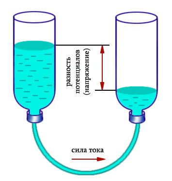
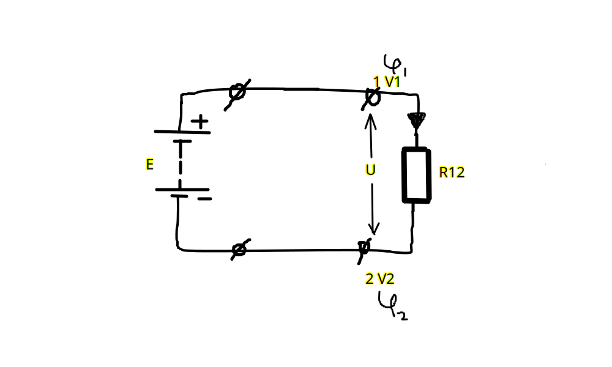
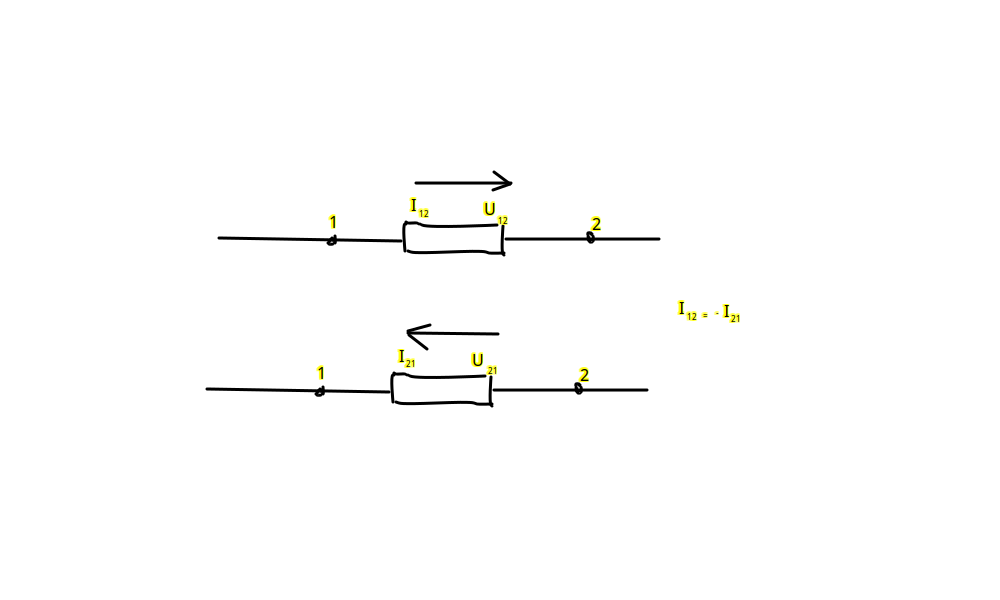

Урок 2. Электрический ток. Сила тока. Скорость и направление тока.
Электрический ток – это направленное (упорядоченное) движение электрически заряженных частиц. Представьте себе реку: вода в ней течет в определенном направлении. Точно так же и электрический ток – это поток заряженных частиц, движущихся вдоль проводника.
Направление тока в цепи — это концепция, связанная с движением электрических зарядов. Она зависит от их природы (положительные или отрицательные) и принятых условностей. Вот ключевые моменты:
1. Условное направление тока
- Исторически принято считать, что ток течёт от положительного полюса к отрицательному в цепи, то есть от области с более высоким потенциалом к области с более низким.
- Это условное направление было установлено до открытия того, что ток в металлах вызван движением отрицательных зарядов (электронов).
Роль Бенджамина Франклина
Франклин, Бенджамин предположил, что электрический заряд течет от стеклянной палочки, натертой шерстью (которую он считал заряженной положительно), к объекту, который притягивается к этой палочке.
Позже было открыто, что в металлах электрический ток образуется за счет движения электронов, которые имеют отрицательный заряд. Таким образом, реальное направление движения заряженных частиц в проводнике противоположно тому, которое предположил Франклин.
Несмотря на то, что мы знаем о движении электронов, соглашение о направлении тока, введенное Франклином, сохранилось в электротехнике. Это связано с тем, что большинство электрических схем и расчетов были разработаны до того, как было точно известно, что именно представляет собой электрический ток. Изменение устоявшегося соглашения привело бы к необходимости переписывать огромный объем технической литературы.
2. Действительное направление тока
- В металлах ток возникает за счёт движения электронов от отрицательного полюса к положительному. Это противоположно условному направлению тока.
- В электролитах (например, растворах солей) ток обеспечивается движением ионов. При этом:
- Положительные ионы (катионы) движутся к отрицательному электроду.
- Отрицательные ионы (анионы) движутся к положительному электроду.
3. Направление тока в полупроводниках
- В полупроводниках ток обусловлен движением:
- Электронов (они отрицательно заряжены) в зоне проводимости (в сторону положительного полюса).
- Положительных «дырок» (псевдозарядов) в валентной зоне, которые движутся в сторону отрицательного полюса.
4. Направление тока в зависимости от типа цепи
- Постоянный ток (DC): ток движется в одном направлении, обычно от источника напряжения.
- Переменный ток (AC): направление тока периодически меняется, так как меняется полярность источника.
5. Практическое использование направлений
- В инженерии и физике чаще используют условное направление тока, чтобы упрощать расчёты и схемы.
- Для анализа электрических цепей используют такие законы, как:
- Закон Ома: .
- Законы Кирхгофа для тока и напряжения.
Важный вывод
Хотя условное направление тока и движущиеся электроны в проводниках идут в противоположных направлениях, все расчёты остаются корректными, если придерживаться единого подхода.
Почему носители заряда движутся?
- Электрическое поле: Оно создается источником тока (например, батарейкой) и действует на заряженные частицы, заставляя их двигаться.
- Разность потенциалов: Это как разница высот в реке. Чем больше разность потенциалов, тем сильнее электрическое поле и тем быстрее движутся заряженные частицы
Сила тока
Сила тока – это количество электрического заряда, проходящего через поперечное сечение проводника за единицу времени. Измеряется в амперах (А).
Чем больше сила тока, тем больше заряженных частиц проходит через проводник за одну секунду.
Скорость движения заряженных электрических зарядов - 1 мм/сек
Скорость тока - 300 000 км/сек (скорость света)
Ток так быстро двигается из-за того что заряженные частицы хоть и медленные но порождают электромагнитную волну которая распространяется со скоростью света.
Ампер (A) - основная единица измерения силы электрического тока в Международной системе единиц (СИ).
Для обозначения более больших или меньших значений силы тока используются кратные и дольные единицы, образованные путем добавления соответствующих приставок к основной единице - амперу.
Кратные единицы тока (большие значения):
- Килоампер (kA): 1 кА = 1000 А
- Мегаампер (MA): 1 МА = 1 000 000 А
- Гигаампер (GA): 1 ГА = 1 000 000 000 А
Дольные единицы тока (малые значения):
- Миллиампер (mA): 1 мА = 0,001 А
- Микроампер (μA): 1 мкА = 0,000001 А
- Наноампер (nA): 1 нА = 0,000000001 А
- Пикоампер (pA): 1 пА = 0,000000000001 А
Таблица кратных и дольных единиц тока:
| Приставка | Обозначение | Множитель |
|---|---|---|
| кило- | k | |
| мега- | M | |
| гига- | G | |
| милли- | m | |
| микро- | μ | |
| нано- | n | |
| пико- | p |
Напряжение
Напряжение – это работа, которую совершает электрическое поле при перемещении единичного положительного заряда из одной точки электрической цепи в другую. Измеряется в вольтах (В).
Напряжение создает электрическое поле, которое заставляет заряженные частицы двигаться.
Напряжение это разность потенциалов – это работа, которую совершает электрическое поле при перемещении единичного положительного заряда из одной точки электрической цепи в другую. Разность потенциалов заставляет электроны двигаться, создавая электрический ток.
Характеризует источник питания: Например, батарейка на 1,5 В создает разность потенциалов в 1,5 вольта между своими полюсами.

Сопротивление
Сопротивление – это свойство проводника препятствовать прохождению электрического тока. Измеряется в омах (Ом).
Сопротивление зависит от материала проводника, его длины и площади поперечного сечения.
Закон Ома
Связь между силой тока, напряжением и сопротивлением описывается законом Ома:
где:
- I – сила тока (А) Ампер
- U – напряжение (В) Вольт
- R – сопротивление (Ом) Ом
Постоянный ток/напряжение/сопротивление/ЭДС маркируются большим регистром I/U/R/E
Переменный ток/напряжение/сопротивление/ЭДС маркируются малым регистром i/u/r/e
Между двумя произвольными точками цепи 1 и 2 создается напряжение U, которое равно разности потенциалов этих точек
U12
U21

При расчете схемы следует выбрать произвольно положительное направление токов и после проверки того что ток положителен выбрать это направление для всей схемы
Маркировка направления тока:
